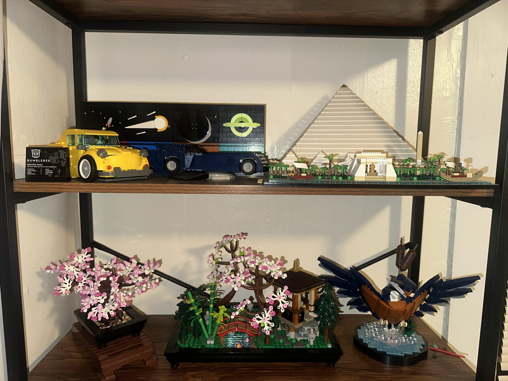

Preface
This space is dedicated to my interests and hobbies, things that allow for healthy distractions and a way to recharge from the more serious aspects of my life. Primarily these hobbies provide an immense sense of joy to me, while also being there to allow me to rest and unwind, and exercise my mind and body in unique ways, that my education and work cannot provide for me.
Thinking about all my hobbies and activities of interest, I have identified three that have been mainstays in my life, being with me for as long as I can remember. Each one of these hobbies is completely different, all focusing on different parts of me and my personality, and all challenging me in completely different ways. The three hobbies I would like to explore in more depth in this space and understand them to a deeper level are Sports specifically Baseball and Golf, LEGO, and Video Games. These three hobbies are a basis of most of most of my free time and will never exit my life.
Sports
Baseball forms a core part of some of my earliest memories, with me beginning to pick up the sport at the age of 4, when I began to play tee-ball at my local little league, as I was exploring the many options that I had for sports going forward, at this young age I did not understand the aspects of baseball that would make me love it so much, being part of a team, and refining my physical skills in a competitive atmosphere.
These aspects became readily apparent however when I made a shift from casual play to a more serious step in my baseball career with travel baseball. Beginning at 9 years old I started playing for the West Michigan Broncos organization, where I had to try-out for the team, displaying the skills and proficiency I had gained through my constant practice and playing during my formative years of the sport. This point is where I began to understand the team aspect of the sport, and that I was playing but a small role (specifically 1/9) that would lead my team to success or failure. Playing baseball is not easy as there is much down time, interspersed with quick moments of high intensity, that required my complete focus and attention, and a use of a multitude of physical skills required to play. These short stints of action resulted in immense highs and lows and required every one of us to find the roles that we were suited for best, that would lead to overall success. For me I quickly found my calling to be that of pitching, due in part to my left-handedness that would otherwise limit the positions I could excel at.
This chapter of my baseball (Pitching) lasted until I “retired” from the sport at the end of high school, was one of the most demanding positions that the game had to offer. Being a pitcher can be compared to being a quarterback, as they are the ones who are the leaders on the field, and the team's success or failures lied directly on your shoulders throughout the entire game. The nature of pitching is very singular, as the pace of play, with the resulting actions of the teammates around you in your hands. Pitching requires a different level of focus and a refinement of skills, mainly concentration and accuracy, with a mix of mental strength and discipline in order to complete your singular goal of getting your team off of defense and onto offense, through hitting an imaginary box the width of Homeplate(give or take a little-bit depending on the umpire) and the height of a batters just below a batters shoulders and their knees. Pitching provided a unique challenge to me mentally, as I was not only working with or against myself and my catcher, against the only opponent who could impact me, the batter. Physically pitching also tough me some motor skills, which would not normally be developed in many other sports, as it required extreme accuracy, all while having the dexterity to keep your accuracy, velocity, and ingenuity up to continue to battle against the opponent's entire lineup. These unique challenges provided to me by pitching, and baseball taught me to understand my role in a larger group, and how to work with people who all have similar but diverging skill sets, that would all help us toward working towards our one true goal, winning games, and tournaments.
After unforeseen world events quickly barred me from continuing my baseball journey, and coming to a personal understanding that while I loved the game, my future was quickly coming to an end with it; I decided to move to another sport that has a completely different set of challenges and skills associated with it, golf. Beginning to play golf for me was an eye-opening experience as the game was completely different to the game of baseball, mainly as it was an incredibly individual activity, I was playing by myself, against myself. Still being in the early days of my golf career, I have quickly realized the unique challenges it presents, requiring extreme focus and consistency for an extremely long period of time, and requiring a set of skills unlike any other sport. While not having a deeper understanding of golf that I do with baseball, I still find it extremely enjoyable as I have been able to see myself quickly progress with the game, and slowly understand what aspects of my game I excel at, while balancing that with the areas of the game that I need to continue to practice on.
Baseball and Golf I believe has been a great pairing of sports in my life, as at an early age I was introduced to working on a team on every level, working toward a shared success, while still having individual aspects that me and my teammates excel at. Baseball also has tough me the importance of having comradery between us, as beyond just playing the game, we would spend hours a week together, and while putting in hard work, we would all still have fun being together, and practicing. While later in my life I switched to an individual sport, which refocused me on looking at myself and understanding my strengths and weaknesses and having a self-drive to continue to improve and get better at the game.
Video Games
Video games have been in my life almost as long as baseball has, and again has provided me with unique opportunities, and sense of relaxation. Throughout my history of playing games, I have sunk my hours into both singleplayer and multiplayer games spanning most genres. I believe that these two distinctions provide me with a different sense of satisfaction, with single player games filling up the same type of enjoyment I would get out of watching a movie or tv show, while allowing me to interact with the story presented to me in a much more granular and unique way. Multiplayer games on the other hand provide me with a competitive nature that I so deeply enjoy, very similar to the thrill I get of playing sports. I feel like I must look at individually to understand where my love of video games comes from.
Looking at single-player games first., I find these games and the stories/experiences contained within, to have a unique way of capturing me, as I am not sitting idly by watching the story progress exactly as how someone else wanted me to experience it, instead I am given a sandbox with the boundaries of the gameplay and story to guide me. For me the most influential single-player games are the ones that focus most on player choice (RPGS, Open-Worlds) as I am really allowed to experience everything the game has to offer in my own way. Furthering this point, these experiences really let myself shine through on the characters, with some of my favorite games, having a playable character that is silent, allowing for me to put myself in the characters shoes, and understand my rationale for why I am making the decisions I am, instead of trying to make decisions that I think the character themselves would make(Fallout: New Vegas, is a shining example of this, while also being one of my favorite games of all time). Outside of the game, single player games also allow me to tinker with them to an extreme degree, as I am not confined by anti-cheats, or protecting the experience for other players, this is where another massive love for single player games comes, modding them. I have poured countless hours sitting outside of these games, in mod launchers and config files, installing and tweaking the game to my exact specifications, and exactly the way I want them. This is the reason that many of Bethesda Game Studios games are some of my favorites, they have a complete open-source package of modding tools and access, that is unrivalled in terms of their scope, and amount of user generated content. This aspect allows me to tap into my natural desire to mess around, and tinker (More than half my hours in Fallout 4, are in the external mod creation tool). With modding I am presented with a unique experience to troubleshoot and craft the game to my exact specifications, making playing them even more rewarding, as I feel the experience is truly mine.
Multiplayer games on the other hand are a different beast for me, taking up most of my total hours playing video games. These games are wholly unlike single players as they require me to play the game the ways the developers want me to, and instead get my enjoyment from the competitive nature of them. The Call of Duty franchise is a great example of this, being the series and game year after year I have the most hours in(by a wide margin) where I do not get to play at my own pace, instead the joy I get is from getting better and better at them, and to see how I slowly progress into become a player with an extremely high skill, and taking satisfaction in knowing that the effort I have put into these games over thousands of hours will display itself every game in my performance, as they are unforgiving, with extreme multitasking, split-second reactions and decision making, that can result in my success in failures alone. This game is among the most casual multiplayer games I play, with others ramping up that skill requirement, and really focusing on their competitive nature.
A game that has had a large impact in my gaming life - and really underscores the competitive I seek out of multiplayer games - both in my mind, and in total hours played is Counter Strike: Global Offensive, a game built from the ground up to be highly competitive and skill based, with much of the randomness of other games completely removed. This games to me gives me the same sense of joy that baseball does, as you will not win without working together as a cohesive and efficient team. This game again pulls another unique aspect out as it is a game that requires intense levels of focus and attention, much like a sport to be competitive in, while exercising completely different parts of my mind and body than something like baseball or golf does, but instead focusing on my ability to make split second decisions in a shorter time frame than any sport does.
Video Games to me provide two extremely different levels of enjoyment, one that allows me to relax and enjoy a story at my own pace, tailoring my experience to the things that I find to have the most fun with, whereas multiplayer games present me with challenges like playing a sport, while bringing in unique aspects and mechanics for me to practice and refine my skills in, all while bringing out the split-second decision making and multitasking skills that are common skills I use in many other aspects of my life.
LEGO
LEGO, is the final of the three hobbies that have been in my life since my formative years. LEGO for me provides a sense of relaxation more than it does of happiness, although I do find immense joy in finishing a model or having one of my creations be complete. I love LEGO for the simplicity it brings, and the distinct change of pace it brings into my life compared to my work and school, and my other hobbies. With LEGO I can focus on just one thing, that is not technology, and nothing that I must stress about, I am simply working with my hands and my mind to pass some time and build a set. I believe that this simplicity is the reason LEGO is still in my life today, even if it’s considered a “toy”.

LEGO entered my life around the same time as baseball, with my parents purchasing my first LEGO set when I was in early elementary school, form that point I was hooked, with any opportunity I had to get a new set or more pieces I would always take my parents up on. My collection quickly grew to an unmanageable size, with my room in my childhood home being littered with completed sets on display, and boxes of assorted pieces taking up most of my closet space. The collection as I reached high-school and college age became almost unmanageable, with every room in my house featuring multiple large sets. Although I found the display of them nice after, I truly found the building process and the connection it built with my parents to be the most special part of this hobby.
From the beginning, me and my dad have always worked on these sets together, in my childhood starting with me really watching him build the more complicated parts of the models, while I would sort out and find the pieces from him. Progressing through my life and becoming more independent in building these sets, I would always make sure to leave them left out with the pieces all available so my dad could come in and build while I was not. This teamwork we had in a sense would always make me very happy, as I felt like I was still a little kid with my dad being by my side helping me out. This continues to this day with me being in college, as I typically only build LEGO when I am on school holidays, spending time with my family.
LEGO provides me with a sense of solidarity and calm, as I must focus and concentrate on building, or I will make mistakes that I will only catch much later when a piece doesn’t line up like it supposed to.For me I really think of LEGO as a mindfulness exercise, as I can let all the other stresses and things in my life go for just an hour or two at a time, and dedicate myself and my mind to something take I take immense joy in doing, that doesn’t involve me sitting Infront of a screen of any type, and just being in my own zone, with the little plastic bricks that have been in my life for almost 20 years at this point.